- Identificación de los efectos
“La anemia es un trastorno en el cual el número de eritrocitos (y, por consiguiente,
la capacidad de transporte de oxígeno de la sangre) es insuficiente para satisfacer las necesidades del organismo. “
Existen distintos tipos con respecto a las causas; sin embargo, la anemia ferropénica es el más común. Esta consiste en la carencia de hierro en el organismo y que además de afectar a la salud de gran número de niños y mujeres de los países en desarrollo, es también muy prevalente en los países industrializados, según la OMS.
Además, la carencia de hierro causa sus mayores estragos en forma de mala salud, muerte prematura y pérdida de ingresos.
La carencia de hierro y la anemia reducen la capacidad de trabajo de las personas, e incluso de poblaciones enteras, entrañan graves consecuencias económicas y obstaculizando el desarrollo de los países. Cabe afirmar que, en términos generales, las personas más vulnerables, más pobres y de menor nivel educativo son las más afectadas por la ferropenia, por lo que también deberían ser las que salen más beneficiadas si se logra reducirla.
Sus consecuencias son negativas, especialmente en los infantes; ya que, afecta el desarrollo cognitivo, motor, comportamiento y hasta el crecimiento. A su vez, trae efectos en aspectos como el educativo, desarrollo del capital humano, en la productividad y calidad de vida de las personas en un futuro. Sí continúa en aumento el porcentaje de afectados, el desarrollo de un país estará muy perjudicado.
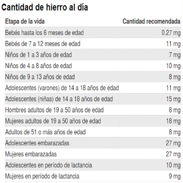
En el caso de las mujeres embarazadas: “Durante el embarazo, la cantidad de sangre en el cuerpo de la mujer aumenta hasta un 50 por ciento más de lo usual. Por lo tanto, necesita más hierro con el fin de producir más hemoglobina para toda esa sangre adicional que se suministrará al bebé y a la placenta.” (Fetal Medicine Barcelona, 2018)
- Efectos a corto plazo
- Efectos físicos en una persona anémica
- Más frecuente: cansancio
- Falta de aliento
- Vértigo (al ponerse de pie)
- Frío en manos y pies
- Palidez en la piel, encías y el lecho de las uñas
- Dolor en el pecho
- Efectos físicos en una persona anémica por deficiencia de hierro
- Uñas quebradizas
- Hinchazón
- Dolor de la lengua
- Grietas en la comisura de la boca
- Infecciones frecuentes
- Síndrome de las piernas inquietas
- Deposiciones con sangre de color rojo vivo o heces de color negro alquitrán
- Efectos a largo plazo
- Efecto de la anemia en mujeres embarazadas
- Durante el embarazo se asocia con un mayor riesgo de tener un parto prematuro, un bebé con bajo peso o que nazca sin vida.
- “(...) la anemia materna puede afectar las reservas de hierro del bebé a la hora de nacer, lo cual aumenta el riesgo de que padezca anemia durante la infancia.” (Infogen, 2015)
- Si se tiene anemia en la última etapa del embarazo, existen más posibilidades de tener problemas si es que se pierde mucha sangre cuando se dé a luz.
- Aumenta las posibilidades de tener una depresión posparto.
- Efecto de la anemia en la adolescencia
- “Se ha estimado que aproximadamente el 20% de la talla de la edad adulta, es ganado durante la adolescencia;7 por lo tanto es importante asegurar las condiciones adecuadas--nutrición adecuada y la prevención del embarazo-- para un crecimiento óptimo durante este período.” (Organización Panamericana de la Salud, 2009)
- Si se tiene deficiencia de hierro en esta etapa, se disminuye el apetito en la persona y afecta la ingesta de energía; por consecuencia, no tendrán un incremento de peso y de la talla.
- Efecto de la anemia en la población infantil
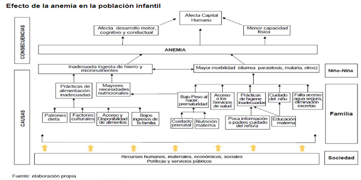
- “La mayoría de los estudios correlacionales han encontrado asociaciones entre la anemia por deficiencia de hierro y un pobre desarrollo cognitivo y motor y problemas de conducta. Los estudios longitudinales indican consistentemente que los niños anémicos en la infancia continúan teniendo una peor cognición, logros escolares y más problemas de conducta en la infancia media.” ( A review of studies on the effect of iron deficiency on cognitive development in children, 2001)
- “En los casos más severos de anemia, se puede observar una mayor irritabilidad en el comportamiento del niño (...)” (guia infantil, 2018)
Esta irritabilidad puede tornarse a una menor capacidad para controlar respuestas impulsivas, a la que se le denominaría como pobre control inhibitorio. Como consecuencia, trae un impacto dentro de los hogares, escuelas, y posiblemente, con el paso del tiempo, se produzca un problema social mayor.
- La deficiencia de hierro produce la falta de desarrollo y actividad metabólica de muchos procesos a nivel cerebral; por lo que, en conclusión, se produce ciertas alteraciones cerebrales.
“Estas alteraciones cerebrales se reflejan a largo plazo en un retraso del desarrollo mental y físico de los niños que han tenido anemia, y como consecuencia un menor desempeño escolar, con altos niveles de repetición de grados y deserción de la escuela primaria en comunidades económicamente pobres.” (Stanco., Gilda G, 2007)
- Medir el efecto
El Perú es un país anémico; ya que, para el 2017, un estudio del Colegio Médico del Perú estimó que de un millón 350 mil niños y niñas entre 6 y 36 meses de edad; al menos , un 43.6% (580 mil) tienen un grado de anemia además por lo menos 600 mil gestantes de las cuales el 28% (168 mil) presentaban anemia. Haciendo así al Perú colocarse entre los países con mayor incidencia de anemia en Latinoamérica.
Según el INEI, en cinco años, la anemia infantil no se habrá visto reducida en una gran porcentaje ya que en este periodo sólo ha reducido un 2.8% desde el año 2013 (46.4%) al 2017 (43.6%). El nutricionista José Sánchez Abanto afirma que 2 de cada 10 niños sufren anemia tanto en el área urbana y el área rural. Ocasiona que muchos niños pierdan el año escolar en reiteradas ocasiones; según un estudio hecho por Baute González Susanne (pediatra) de un grupo selecto de escolares ingresados por anemia el 68% presentaba depresión siendo más recurrente en el sexo femenino(75%).
Además, gran cantidad de niños adquiere una nueva enfermedad gracias a la anemia, especialmente, en los sectores de mayor friaje como lo es Puno y Huancavelica; en estas regiones, mayormente; evolucionan a una IRA.
En cambio, un 29.6% representa las mujeres embarazadas con anemia.Asimismo, Lima Metropolitana concentra la mayor cantidad de mujeres gestantes con anemia (23,1%), seguido de la selva (22,9%), la sierra y el resto de la costa (18,9%) informó el ENDES. Repercutiendo en problemas durante el embarazo; ya que, un estudio hecho por la UANL, el 94.2% de mujeres gestantes con anemia demostraron una incidencia significativamente mayor de amenaza de aborto, infección urinaria, parto prematuro, ruptura prematura de membranas, estado hipertensivo del embarazo, oligohidramnios, hemorragia obstétrica, hemotransfusión, infección de herida, recién nacidos de bajo peso y menores de 37 semanas. Adicionalmente, un parto prematuro afecta del 10 al 15% de todos los partos a nivel mundial según la OMS, dada la prematuridad del nacimiento como principal consecuencia la muerte neonatal y secuelas neurológicas.
- Comparar con estándares
La anemia actualmente es el problema más extendido de salud y nutrición pública en el mundo. Se estima que más de 2 000 millones de personas (30 % de la población mundial) registran algún grado de anemia. Afecta a todos los paises sin excepcion alguna, si bien es cierto los niveles de anemia son mayores en los países, regiones y grupos poblacionales con mayor nivel de pobreza, también están incluidos los no pobres.
En el Perú, para el año 2017, se estima que existen 1 350 000 niñas y niños entre 6 y 36 meses de edad. De ellos, el 43.6 % (580 000) tienen algún grado de anemia.
Los niveles de anemia permanecen sin variación desde el año 2015. La prevalencia registrada en menores de tres años en 2017 (43.6 %) es similar a la registrada en 2016 y mayor que la de 2015.
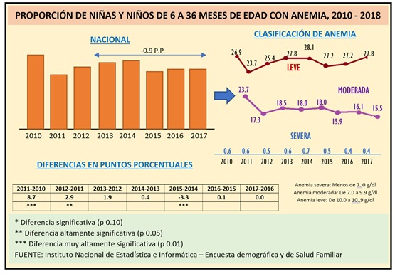
De cada 100 casos de anemia, 64 corresponden a anemia leve. La anemia leve, no da síntomas evidentes en los cuales podamos darnos cuenta de inmediato, por esta razón los cuidadores del niño ya sean los padres o un pariente cercano, no reconocen que este tiene anemia y generalmente asumen una actitud pasiva frente al tema.
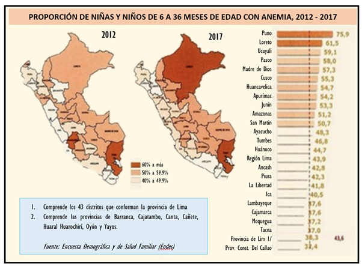
“Cuando en una población más del 40 % de los niños tienen anemia, se puede afirmar que todas las personas de este grupo etario tienen algún grado de déficit en sus reservas de hierro, generalmente a nivel de la médula ósea.”
(Según la Organización Mundial de la Salud (OMS),
Según el Centro Nacional de Alimentación y Nutrición (Cenan), en el Perú, los niños pequeños solo cubren la tercera parte de sus necesidades de hierro a través de la alimentación diaria. Además, debido a la alta prevalencia de anemia de la gestante y a la escasa práctica del “corte tardío del cordón umbilical”, el niño nace con muy pocas reservas de hierro. Las causas de este problema trae consigo infecciones frecuentes e infestaciones parasitarias.
Health (2011), señala que las deficiencias de vitaminas y minerales, en particular las de hierro, vitamina A y zinc, afectan a más de 2 000 millones de personas en todo el mundo. Los niños pequeños son muy vulnerables debido al rápido crecimiento y a prácticas dietéticas inadecuadas.
- Cuantificar el impacto
- Más de 600 000 niños y niñas menores de tres años padecen anemia.
- Según la última Encuesta Demográfica y de Salud Familiar, Endes 2017, la prevalencia de la anemia es de 34,1% y acumula dos años consecutivos de incremento. Según Grade, “este incremento resulta un grave problema de salud pública que implica costos de casi medio punto del PBI, debido a los efectos negativos en el desarrollo cognitivo, en la productividad y en el aumento de los costos al Estado por el aumento de la repitencia y la atención de partos prematuros.”
- Según las OMS, en el año 2005, 1620 millones de personas (24,8% de la población mundial) se vio afectado por esta enfermedad, siendo la población preescolar la más afectada, con un índice de afección de 47,4%.
- Sin embargo una normativa escrita por la misma organización en el año 2016 nos informa que el grupo de la población mundial con mayor peligro de muerte ocasionada por esta enfermedad es el de madres gestantes y madres postparto (41,8%).
- Es bien sabido que la deficiencia de hierro en el organismo de un niño puede traer consecuencias a largo plazo,como en su desarrollo cerebral,su capacidad cognitiva y motora, que puede ocasionar trastornos de conducta,inhabilidad para controlar músculos y ralentizar el crecimiento del infante.
- Sólo el 0.5%($2,576,635,000 USD) del PBI del País($514,927,000,000 USD) es utilizado para afrontar la anemia.
Se realizó un análisis para obtener la inversión en la educación a causa de la anemia.
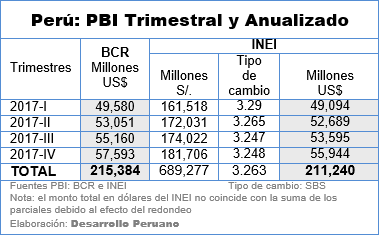
- 1)Tenemos como dato el PBI del año 2017 de: 211,240,000,000 millones de dólares.
- Según “El Comercio”, (Referencia: Recuperado de: https://elcomercio.pe/economia/peru/afectan-indices-anemia-economia-nacional-noticia-530421) en el 2017 se invirtió 0.5% del PBI por la atención de partos prematuros y la repitencia en niños.
- 3) En “El Comercio” también se hace mención que, en el Perú, se invirtió un 3.7% del PBI en el año 2017. Estos datos fueron obtenidos por el Banco Interamericano del Desarrollo.(Referencia: Recuperado de: https://elcomercio.pe/peru/peru-paises-invierte-educacion-region-noticia-454487)
- 4) Primero, se hizo un cálculo para saber cuántos millones se habían invertido por las consecuencias de la anemia en el año 2017.
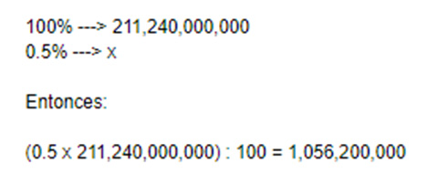
- 5) Si obtenemos el 3.7% de la cifra obtenida en el punto anterior, se puede obtener una aproximación de cuánto se ha invertido en la educación a consecuencia de la anemia.
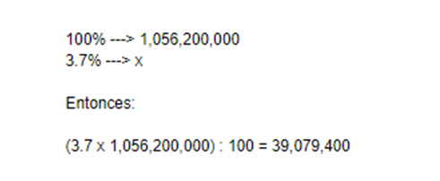
- En conclusión, en el año 2017 se invirtió un aproximado de $ 39,079,400 dólares a consecuencia de la anemia en el campo educación.
- Malos Habitos Alimenticios
Este mineral esencial para el desarrollo de la persona se encuentra en los alimentos en dos maneras: hierro hemo y no hemo. El primero mencionado es de origen animal, y el segundo; vegetal. Según National Institutes of Health, el hierro hemo tiene mayor absorción a comparación del no hemo. Para que pueda ser absorbido el hierro de los vegetales, se tiene que consumir junto a alimentos con vitamina C o carnes.
Este cuadro estadístico del estudio "Ensayo comunitario para mejorar la adherencia a la suplementación con micronutrientes en niños de 6 a 35 meses de edad de la DIRESA/DISA Puno, Tacna, Loreto y Lima Este" (2014) muestra los porcentajes de madres que no tienen conocimientos adecuados sobre la anemia, es decir, desconocen sus causas y consecuencias de este grave problema, por lo que no la consideraban muy importante. Si bien el estudio no hace referencia a la actualidad, hay que considerar que, hoy en día, se cuenta con un mayor porcentaje de prevalencia a comparación del 2014.
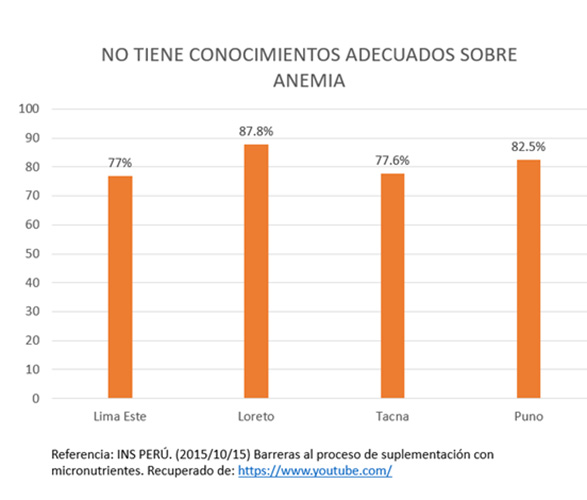
Con estos datos obtenidos del estudio: "Ensayo comunitario para mejorar la adherencia a la suplementación con micronutrientes en niños de 6 a 35 meses de edad de la DIRESA/DISA Puno, Tacna, Loreto y Lima Este", se puede relacionar a la idea de que, en la gran parte de hogares peruanos, se consume una gran cantidad de vegetales, es decir, hierro no hemo. Como se demuestra altos porcentajes de desconocimiento sobre la anemia, se considera que este grupo de personas no saben sobre el consumo adicional de alimentos con otras vitaminas para la absorción correcta del hierro al día.

Con esta recolección de datos estadísticos y conceptuales, se puede llegar a una conclusión de que se podría evitar muchos casos de anemia por deficiencia de hierro si se ofrece una mayor información a la población más vulnerable con respecto a la alimentación adecuada.
- Malos Diagnósticos
- Diagnóstico de Anemia Ferropénica
En los últimos años para poder detectar la Anemia tipo Ferropénica se usa un análisis de hemoglobina, que en bebés y niños pequeños es muy sencillo realizar esta prueba. Una de las formas de diagnosticarla es a través de una gota de sangre extraída mediante una punción en un dedo de la mano, utilizando equipos portátiles llamados hemoglobinómetros. Este procedimiento tiene un costo bajo y dura, aproximadamente, cinco minutos. Se les diagnostican con anemia a los niños de 2 a 6 meses que tienen una concentración de hemoglobina menor a 9.5g/dl. Los niños de esta edad deben tener en promedio entre 9.5 y 13.5g/dl. En niños de 6 meses a 5 años se les diagnostican con anemia leve cuando tienen una concentración de hemoglobina entre los 10.0 y 10.9g/dl, moderada, cuando se encuentra entre 7.0 y 9.9g/dl, y severa, cuando es inferior a los 7.0g/dl, según los rangos establecidos por la Organización Mundial de la Salud (OMS).
- Problemas con el diagnóstico
Como se mencionó en el inciso anterior existen parámetros mundiales para la detección de anemia, pero existe un ajuste por altura a partir de 1000 msnm en adelante, los puntos de corte planteados fueron definidos por la OMS en 1968, el problema con estos puntos de corte planteados es que en algunas altitudes se detectaban niños anémicos cuando en verdad no lo estaban. Esto se puede saber gracias una propuesta de ajuste de hemoglobina hecha por SOPENUT el 2015 en la cual con un nuevo modelo de regresión exponencial se identificaban menos niños con anemia que con el factor del Center for Disease Control and Prevention (CDC)
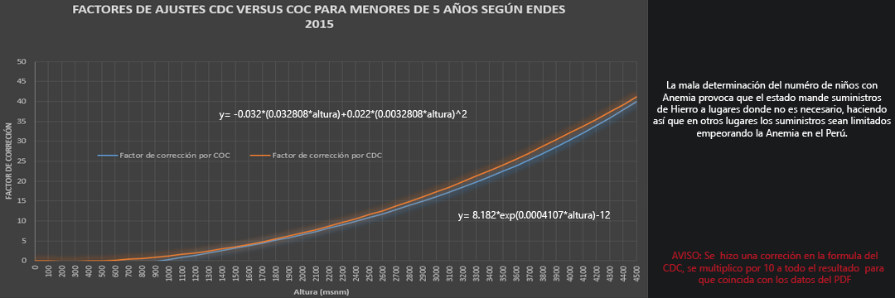
gracias al siguiente gráfico se puede concluir que los diagnósticos hechos actualmente por el estado peruano mediante el ajuste de altura hecho por la OMS tiene un 2.5% de error, lo cual si bien no parece mucho, cuando hablamos de una país entero se convierte en un problema mayor.
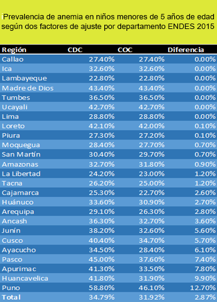
- Malos Tratamientos
- Tratamiento
El tratamiento de la anemia depende del tipo, la causa y la gravedad de la enfermedad. Los tratamientos pueden consistir en
- Cambios en la alimentación
- Suplementos nutricionales
- Medicamentos
- Intervenciones quirúrgicas
- Cirugía para el tratamiento de la pérdida de sangre
- Objetivo del Tratamiento
El objetivo del tratamiento es aumentar la cantidad de oxígeno que la sangre puede transportar. Este aumento se consigue haciendo crecer la cifra de glóbulos rojos o la concentración de hemoglobina (la hemoglobina es una proteína de los glóbulos rojos rica en hierro y que transporta oxígeno a las células del organismo). Otro objetivo es tratar la enfermedad de fondo o la causa de la anemia.
En el caso que exista un mal diagnóstico, por consecuencia dará un mal tratamiento, porque el tratamiento que se le da a cada paciente dependerá del tipo de anemia que parezca.Por ejemplo si se detecta que el paciente tiene anemia por falta de hierro en la alimentación, entonces su médico puede recomendar suplementos de hierro con prescripción médica o de venta libre, ciertas vitaminas, terapia con hierro por vía intravenosa o medicamentos que hacen que su cuerpo produzca más glóbulos rojos. Para prevenir la anemia en el futuro, su médico también puede sugerir cambios alimenticios saludables, pero si tiene anemia severa, su médico puede recomendar transfusiones de glóbulos rojos.
Existen casos en que la persona que va a un diagnostico para saber si tiene anemia, se hace la respectiva prueba de hemoglobina y esta sale positivo, el medico le receta suplementos de hierro, y resulta que el diagnostico fue erróneo por lo tanto no tenía anemia, debido a este mal diagnostico se le aplico un mal tratamiento, como consecuencia a esto la persona que al principio no tenía anemia da como resultado la anemia.
- La anemia y la Depresión
Casi el 30 por ciento de las mujeres en edad fértil padecen sin saberlo anemia por falta de hierro, una patología que muchas veces se cataloga por error como depresión debido a que muchos de sus primeros síntomas son similares.
El jefe del Servicio de Hematología de Vithas Xanit de Benalmádena (Málaga), Javier Gutiérrez, ha señalado hoy de que uno de los principales problemas que tiene la ferropenia o anemia por falta de hierro es su falta de diagnóstico, ya que debido a sus primeros síntomas muchas pacientes son catalogadas como depresivas.
"Lo más importante para poder controlar este falta de hierro es saber diagnosticarla de forma adecuada", ha insistido el especialista, quien ha explicado que un análisis de sangre que mide el número de glóbulos rojos y su tamaño, así como la hemoglobina y la determinación de la ferritina permite detectar esta patología.Uno de los problemas que tiene el tratamiento con hierro puede ser su mala tolerancia -puede producir estreñimiento, diarrea, molestias gástricas-, lo que hace que muchas veces no se siga bien o se tome a menos dosis de la necesaria, casos para los que se dispone de hierro de administración intravenosa.
- Malos Hábitos de Higiene
En el país, muchas personas viven en zonas donde los servicios más básicos no existen. Es una dura realidad que afrontan alrededor de 3.4 millones de personas, tan sólo en la capital, más de 65 mil familias carecen de servicios básicos. Siendo las regiones más afectadas Loreto, Ucayali y Puno con más del 50% de personas careciendo de servicio de agua potable. Convirtiéndonos en uno de los países latinoamericanos con mayor índice de falta de acceso a higiene digna, según el JC Magazine, esto origina que muchas personas (en especial los niños) sufran de enfermedades como: diarrea, paludismo, esquistosomiasis, parasitosis, etc.


- La Parasitosis
La parasitosis se relaciona a la falta de higiene,ya que, esta es una de las principales causas para que dicha enfermedad haga su aparición. La falta de agua y desagüe causa el ciclo de contagio boca-ano.
En los niños, los síntomas son de fácil detección, ya que, produce picazón en el ano, dolor abdominal, poco apetito y mucho sueño.
En mujeres embarazadas también pueden tener el caso de parasitosis provocando diarrea, vómitos, dolor abdominal, picazón anal, etc.
- Relación de la Anemia y la Parasitosis
La falta de apetito produce que las personas no puedan absorber los niveles de hierro necesarios y así contraer la anemia. Las mujeres embarazadas deben consumir altos niveles de hierro para satisfacer sus necesidades y las del feto. Al no consumir alimentos por la falta de apetito que genera la parasitosis, la madre está vulnerable a sufrir de anemia y que su hijo también lo padezca. Los niños que no tienen buena alimentación no pueden rendir en las escuelas y realizar sus actividades diarias. Al no consumir alimentos ricos en hierro, estos niños son propensos a sufrir de anemia, ocasionando preocupación a las familias, ya que, el niño no atendería las necesidades brindadas por la escuela. Esto generaría una pérdida del año escolar, el paciente también sufriría de depresión y tomaría conductas más impulsivas.
- Seguimiento Inadecuado
Después de haber obtenido un diagnóstico correcto, se hace inicio de la curación respectiva; pero en este caso solo nos centraremos en la anemia producida por mala nutrición y deficiencia de hierro, por lo cual restringiremos algunas de sus causas para un mejor análisis como ejemplo hemorragias por miomatosis o ulceras gástricas perforadas.
El seguimiento que se suele brindar a pacientes de 6 a 35 meses de edad consiste en una recopilación de datos recogida por herramientas de control de calidad, utilizadas para optimizar mejor los recursos empleados (suplementos de hierro) y la de mejorar resultados obtenidos , el uso de consejerías ofrecidas por el CRED, que abre un espacio de comunicación entre el personal de salud y la madre o apoderado del niño para apoyar practicas saludables y el buen monitoreo de agua segura para los hogares.
El Seguimiento de la anemia tiene ciertos pasos a seguir (1):
- En los primeros días del tratamiento con micronutrientes, el paciente refiere cambios en las sensaciones subjetivas (nivel de fatiga, capacidad de trabajo, dolor de cabeza, mareo etc.).
- Entre cinco y ocho días después de iniciado el tratamiento se determina obligatoriamente el nivel de los reticulocitos para saber si hay aumento de este parámetro (dos a 10 veces antes del tratamiento) o no (Fig. 1). Si la respuesta es positiva quiere decir que el medicamento y la dosis son correctos. En caso contrario, la dosis es insuficiente o la anemia no es ferropénica.
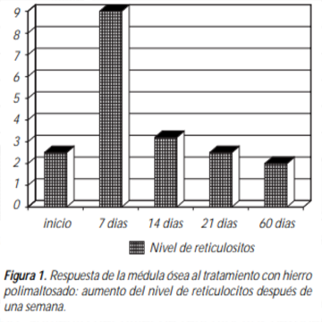
- Después de tres semanas valoramos el incremento de la hemoglobina y la cantidad de eritrocitos. Habitualmente los pacientes después de un mes de terapia presentan cifras normales de hemoglobina y desaparición de hipocromía de los eritrocitos (Fig. 2).
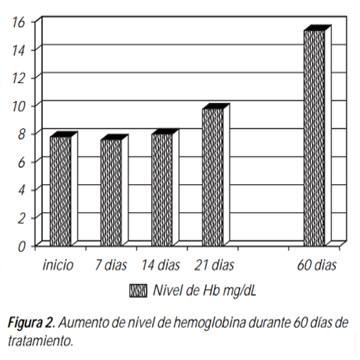
- Por la saturabilidad del depósito se continúa el tratamiento de uno a dos meses más con dosis de hierro más pequeñas (la mitad de la dosis inicial) y con control de exámenes de laboratorio biometría hemática y química sanguínea (Fig. 3).
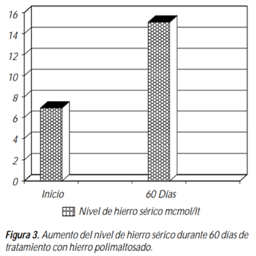
Algunos datos que tenemos que tomar en cuenta en el seguimiento del paciente es que la administración oral de medicamentos con hierro provoca algunas veces efectos secundarios (con Fe++ mucho más, que con Fe+++): náuseas, vómitos, dolor de estómago, estreñimiento.
Y que también la formación de FeSO3, es una causa de estreñimiento durante el tratamiento con sulfato ferroso. Esta sustancia (FeSO3), es un inhibidor de la función del intestino grueso. Algunos pacientes, sobre todo los niños, presentan pigmentación café marrón de los dientes. Las defecaciones son de color negro, lo que no tiene ningún significado clínico.
El problema radica en que a pesar de tener un sistema bien planteado del control de la anemia y la oportunidad de consejerías, estas son están siendo muy eficaces en la atención infantil;
Debido a que un estudio realizado por la Contraloría General de la Republica (2) sobre la Suplementación con Micronutrientes en niños de 6 a 35 meses, entre enero del 2015 y marzo del 2016, identificó un tiempo reducido destinado para brindar la consejería nutricional para la suplementación dentro del marco del CRED; así mismo detectó ineficacia de la consejería nutricional, como factor que contribuye a que los niños que inician el esquema de suplementación no lo concluyan satisfactoriamente. Entre otros hallazgos, no podemos echar a un lado de que a pesar de haber mejorado y optimizado los recursos empleados y la captura de datos, las herramientas de control de calidad son 100% efectivas solo en algunas zonas de nuestro país, y esto se debe a que todo sector de la población presenta diferentes características a tomar en cuenta, que no son valorizadas muy seguido por estas herramientas.


 John Doe
Client
John Doe
Client
 John Doe
Client
John Doe
Client
 John Doe
Client
John Doe
Client